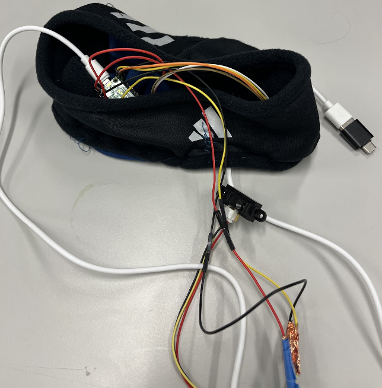
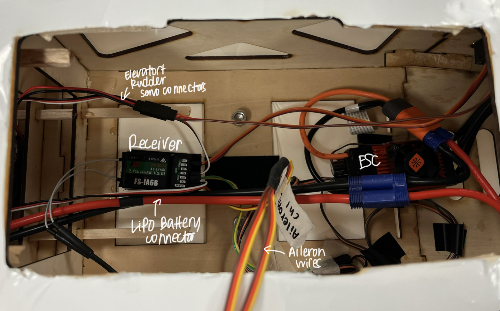
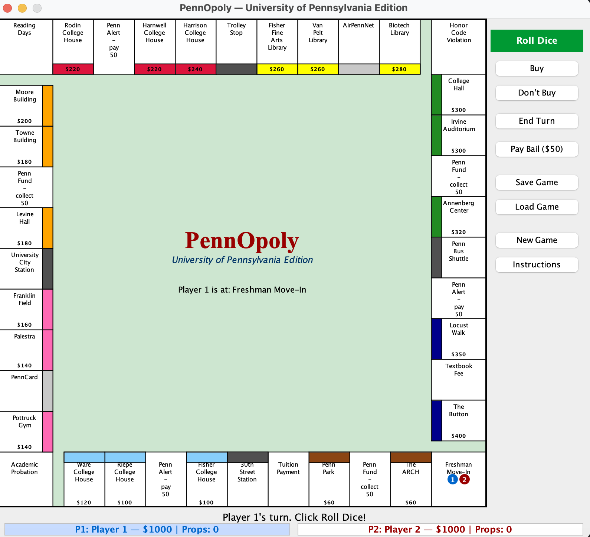
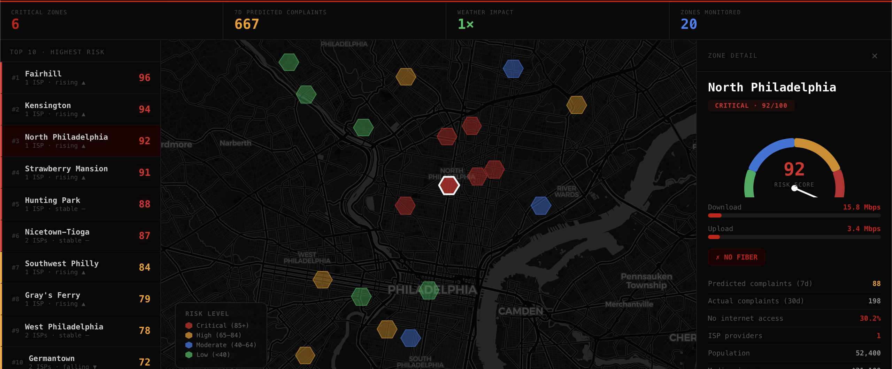

Projects
A selection of things I've built — personal projects, open source, and professional work.

Wake-Up Glasses — Drowsiness Detection Wearable
Collaborated with a 3-person team to design a headband that detects drowsiness through sensor data and delivers real-time IoT alerts to an Apple Watch using a Raspberry Pico-based control system. University of Pennsylvania, Fall 2025.

Penn Aerospace Club — Propulsion & Avionics RC Plane
Designing, testing, and optimizing propulsion systems to improve aircraft performance for the AIAA Design/Build/Fly Competition.

PennOpoly
A University of Pennsylvania-themed two-player Monopoly implementation with Penn locations, jail mechanics, save/load functionality, and a configurable board loaded from text files. Built with Java Swing using an MVC architecture.

Dead Zone Detective
A predictive analytics dashboard that identifies internet connectivity gaps across 20 Philadelphia neighborhoods before service complaints emerge. Combines FCC broadband data, Ookla speed tests, and Census demographics to surface equity disparities and generate actionable dispatch recommendations.
ChatterBot
A Markov Chain-based text generator that learns from social media posts and produces new, plausible-sounding output. Processes training data through CSV parsing, tokenization, bigram probability training, and probabilistic text generation.